Изучение температурной зависимости электропроводности полупроводников
1. Цель работы
Изучить зависимость электропроводности полупроводникового образца от температуры. Определить ширину запрещенной зоны
2. Теоретическое введение
Электропроводность материалов определяется выражением:
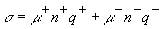
(1)где q+ и q- - соответственно величина заряда положительных и отрицательных носителей электрического заряда, n+ и n- - концентрация соответственно положительных и отрицательных носителей заряда, µ+ и µ- - подвижности положительных и отрицательных носителей заряда.
В нашей задаче исследуется собственная электропроводность полупроводника. Поэтому положительными носителями заряда являются дырки, а отрицательными- электроны. Следовательно,
|q+| = |q-| = e
и, поскольку полупроводник собственный, то n+ = n- = n
Тогда
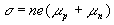
(2)Здесь µn и µp- подвижность электронов проводимости и дырок, соответственно.
Строго говоря, от температуры зависят и концентрация, и подвижности носителей заряда. Однако, во многих случаях в узком диапазоне температур зависимостью подвижностей от температуры можно пренебречь и считать подвижности постоянными, не зависящими от температуры. В данной работе рассматривается именно этот случай.
Зависимость концентрации собственных носителей от температуры описывается экспонентой:
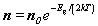
(3)Здесь Eg - ширина запрещенной зоны, k- постоянная Больцмана, T- температура образца, n0- концентрация носителей при высоких температурах.
Отсюда
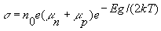
(4)Обозначим n0 e(µn+µp)=
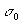
и условно назовем это электропроводностью образца при бесконечно большой температуре. В результате получим выражение для электропроводности образца: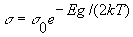
(5)Таким образом, зависимость электропроводности собственного полупроводника от температуры является экспоненциальной. Уравнение (5) поддается экспериментальной проверке и позволяет определить ширину запрещенной зоны полупроводника Eg . Именно это и является целью данной лабораторной работы.
Прологарифмируем формулу (5). Получим:
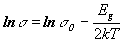
(6)Отсюда следует, что график зависимости от
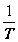
представляет собой прямую линию, что легко проверить практически. Для вычисления ширины запрещенной зоны Eg поступим следующим образом. Построим прямую (6). В уравнении (6) имеем два неизвестных: ширину запрещенной зоны Eg и логарифм электропроводности при бесконечно большой температуре lns 0. Возьмем на прямой (6) две произвольные точки. Уравнение (6) для этих точек запишется как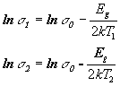
(7)Решив эту систему относительно Eg получим:
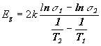
(8)Формула (8) является рабочей для вычисления ширины запрещенной зоны полупроводника.
В данной работе полупроводниковый образец выполнен в виде параллелепипеда, имеющего длину l, ширину a и высоту b. Для вычисления электропроводности образца воспользуемся законом Ома. Электрическое сопротивление образца по закону Ома равно
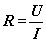
(9)где U- электрическое напряжение на образце, I- сила тока через образец. Приняв во внимание геометрию образца и связь электропроводности и удельного сопротивления
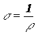
найдем выражение для электропроводности полупроводникового образца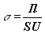
(10)где S=ab- площадь поперечного сечения образца.
3. Описание лабораторной установки
Схема лабораторной установки приведена на рис.1.
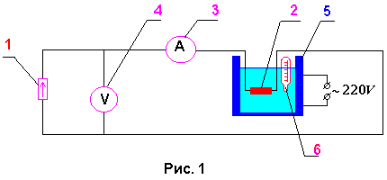
Сила тока источника (1) не зависит от сопротивления нагрузки. Нагрузкой источника является образец (2). Сила тока, протекающего через образец, регистрируется миллиамперметром (3), а напряжение на образце измеряется при помощи вольтметра (4). Образец наклеен на электроизолирующую теплопроводную пластину и помещен в печь (5) с маслом. Туда же помещен термометр (6) для измерения температуры образца.
4. Задание
Выполняется по вариантам.|
Вариант |
Сила тока, мА |
|
1 |
3 |
|
2 |
3,8 |
|
3 |
4,6 |
|
4 |
5,4 |
|
5 |
6,2 |
|
6 |
7 |
|
7 |
7,8 |
|
8 |
8,6 |
|
9 |
9,4 |
|
10 |
10 |
5. Контрольные вопросы
6. Литература